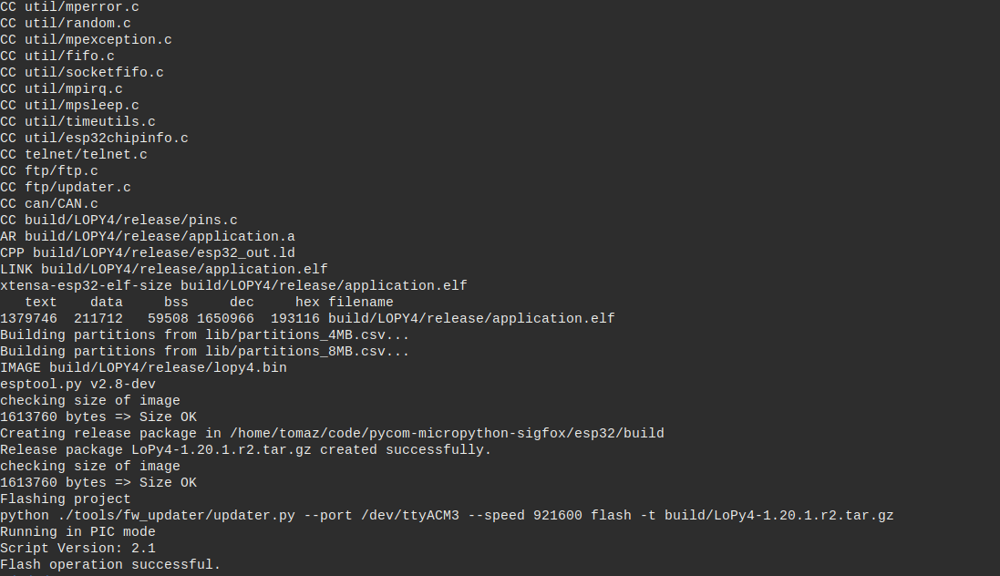

Micropython and Lopy
About ruining Python on bare metal, using Pycom Lopy and Micropython.
Table of Contents
Start
- 5V
- Micro USB cable
- Lopy and board (Expansion, Pysense, Pytrack..)
FTP
Connect to access point with name lopy-[random characters] and credentials:
u: admin
p: www.pycom.io
Telnet
$ telent 192.168.4.1
Serial
Connecting to UART we can use any program rshell or minicom, screen..
Get information about ports:
dmesg | egrep --color 'serial|ttyS'
content
Connect to device with rshell
pip install rshell
rshell -p /dev/ttyUSB0 --buffer-size=30
rshell -p /dev/ttyACM0 --buffer-size=30"
Copy file to device
cp <file-name> /flash/
Copy directory
cp -r <directory-name> /flash/<directory-name>
Rsync project
rsync -mv <directory-name>/ /flash/
After connecting to device over serial enter in REPL mode
$ repl
Exit REPL
CTRL - X
Code example
Project structure
project/
├── lib/ <--- Place for sensors drivers
├── boot.py <--- First file to be executed on start up
├── config.py <--- Global variables
└── main.py <--- Executed after boot
Config file
# config.py
DEV_ID = "<DEV_ID_REGISTERED_ON_LORA_SERVER"
# TTN Registered Device IDs
DEV_EUI = '<DEVICE-EUI>'
APP_EUI = '<APPLICATION-EUI>'
APP_KEY = '<APPLICATION-KEY>'
# Debug
DEBUG_LED = True
DEBUG_CON = True
# LoRa setup
LORA_FREQUENCY = 868100000
# Activate confirmation message
LORA_STATUS = True
# Data Rate (0 - 7)
LORA_DR = 5 # DR_5
# Bind socket to port
SOCK_PORT = 1
# Sleep time in packet send
SLEEP_MAIN = 300
# Low Energy config
HEARTBEAT = False
# LED color
LED_OFF = 0x000000
GREEN = 0x007f00
YELLOW = 0x7f7f00
RED = 0x7f0000
BLUE = 0x00007f
Boot file
# boot.py -- run on boot-up
import os
import machine
# Enable REPL duplication on UART0
uart = machine.UART(0, 115200)
os.dupterm(uart)
# Run main module
machine.main('main.py')
Main file
"""
Basic LoRa example based on OTAA (Over The Air Authentication)
"""
from network import LoRa
from network import WLAN
import binascii
import pycom
import socket
import time
import config as c
# Set heartbeat
pycom.heartbeat(c.HEARTBEAT)
# Initialize LoRa in LORAWAN mode.
lora = LoRa(mode=LoRa.LORAWAN)
# create an OTA authentication params
dev_eui = binascii.unhexlify(c.DEV_EUI.replace(' ', ''))
app_eui = binascii.unhexlify(c.APP_EUI.replace(' ', ''))
app_key = binascii.unhexlify(c.APP_KEY.replace(' ', ''))
if machine.reset_cause() != machine.DEEPSLEEP_RESET:
lora.nvram_erase()
if c.DEBUG:
print("[i] Lora nvram erased!")
else:
lora.nvram_restore()
print("[i] Lora nvram restored!")
if not lora.has_joined():
# Join a network using OTAA
if c.DEBUG:
print("[i] Joining LoRa network")
# Join a network using OTAA
lora.join(activation=LoRa.OTAA, auth=(dev_eui, app_eui, app_key), timeout=0)
# Wait until the module has joined the network
fails = 0
while not lora.has_joined():
fails += 1
if c.DEBUG:
print("[w] Not joined yet... {}".format(fails))
blinker(c.LED_RED)
# Time between joins
time.sleep(2.5)
if fails >= c.JOIN_FAILS:
if c.DEBUG:
blinker(c.LED_RED, n=3)
fails = 0
machine.idle()
# Create a LoRa socket
sock = socket.socket(socket.AF_LORA, socket.SOCK_RAW)
# Set the LoRaWAN data rate
sock.setsockopt(socket.SOL_LORA, socket.SO_DR, c.LORA_DR)
if c.LORA_STATUS:
# Selecting confirmed type of messages
sock.setsockopt(socket.SOL_LORA, socket.SO_CONFIRMED, True)
# Bind to port used then on ttn application inside payload switch
sock.bind(c.SOCK_PORT)
# Make the socket blocking
sock.setblocking(False)
# To make connection available wait 5 seconds
if c.DEBUG:
blinker(c.LED_BLUE, t=5, s=1)
print("[i] Joined!")
else:
time.sleep(5.0)
i = 0
# Example loop
# Terminate in CTRL-C
# See threading example
while True:
# Prepare the packet
# send 'hi' as raw byte data (hex format)
pkt = bytes([0x68, 0x69])
# Send it
s.send(pkt)
if c.DEBUG_CON:
print('send >> ', pkt)
if c.DEBUG_LED:
pycom.rgbled(c.GREEN)
time.sleep(0.1)
pycom.rgbled(c.LED_OFF)
# Wait to receive packet
time.sleep(4)
rx = s.recv(256)
if rx and c.DEBUG_CON:
pycom.rgbled(c.BLUE)
time.sleep(0.1)
pycom.rgbled(c.LED_OFF)
print("receive << ", rx)
# Sleep 10 min
time.sleep(c.SLEEP_MAIN)
i += 1
Code snippets
>>> def work_handler(alarm):
print("Do some work here...")
>>> machine.Timer.Alarm(work_handler, s=(60), periodic=True)
Building a firmware image

Requirements
- Pycom MicroPython source code
- Xtensa gcc compiler
- Espressif IoT Development Framework
Debian/Ubuntu
sudo apt-get install gcc git wget make libncurses-dev flex bison gperf
python python-serial
Source code
Get Pycom MicroPython source code
$ git clone https://github.com/pycom/pycom-micropython-sigfox
Check out to latest stable version (output on date 2018-07-23)
$ git tags
1.11.0.b1
1.12.0.b1
1.13.0.b1
1.6.13.b1
v1.14.0.b1
v1.15.0.b1
v1.16.0.b1
v1.17.0.b1
v1.17.2.b1
v1.17.3.b1
v1.18.0
v1.18.0.r1 <--- Check out tag
v1.18.0.r1-0.
v1.19.0.b2
v1.19.0.b3
v1.19.0.b4
$ git checkout v1.18.0.r1
Xtensa
Install xtensa gcc compiler
$ cd $HOME/pycom-build
$ wget https://dl.espressif.com/dl/xtensa-esp32-elf-linux64-1.22.0-80-g6c4433a-5.2.0.tar.gz
$ tar -xzf xtensa-esp32-elf-linux64-1.22.0-80-g6c4433a-5.2.0.tar.gz
$ export PATH=$PATH:$HOME/pycom-build/xtensa-esp32-elf/bin
Verify content of $PATH variables:
$ echo $PATH
Verify toolchain installation:
$ xtensa-esp32-elf-gcc -v
If command returns xtensa-esp32-elf-gcc: Command not found recheck the the export command!
ESP-IDF
Install ESP-IDF tools
$ cd $HOME/pycom-build
$ git clone https://github.com/pycom/pycom-esp-idf.git
$ cd pycom-esp-idf
$ git submodule update --init
$ export IDF_PATH=$HOME/pycom-build/pycom-esp-idf
More details:
Build process
Read this first: https://github.com/pycom/pycom-micropython-sigfox
- Build mpy-cross
$ $HOME/pycom-build/pycom-micropython-sigfox
$ cd mpy-cross && make clean && make && cd ..
- Frozen modules (OPTIONAL)
Add custom python modules to include in the firmware in following directory:
$HOME/pycom-build/pycom-micropython-sigfox/esp32/frozen/Custom
- Board build
Currently support for the following BOARD types:
WIPY LOPY SIPY GPY FIPY LOPY4
$ cd $HOME/pycom-build/pycom-micropython-sigfoxesp32/esp32
$ make BOARD=LOPY clean
$ make BOARD=LOPY -j5 TARGET=boot
For LoRa need to specify the LORA_BAND
# LORA_BAND=USE_BAND_868
# LORA_BAND=USE_BAND_915
$ make BOARD=LOPY -j5 LORA_BAND=USE_BAND_868 TARGET=app
- Flash the image on board
Pysense board
The pysense board enter automatic in programming mode
# On linux
$ make BOARD=LOPY -j5 ESPPORT=/dev/ttyACM0 flash
Extension board
Put in programming mode connect GND to P23
# On linux
$ make BOARD=LOPY -j5 ESPPORT=/dev/ttyUSB1 flash
# On MacOSX
$ make ESPPORT=/dev/tty.usbserial-DQ008HQY flash
Rebuild process
Making rebuild looks like this:
export PATH=$PATH:$HOME/pycom-build/xtensa-esp32-elf/bin
export IDF_PATH=$HOME/pycom-build/pycom-esp-idf
$HOME/pycom-build/pycom-micropython-sigfox/esp32/
make BOARD=LOPY4 clean
make BOARD=LOPY4 release
make BOARD=LOPY4 -j5 ESPPORT=/dev/ttyACM3 flash
Encryption
Use make SECURE=on [optionally SECURE_KEY ?= secure_boot_signing_key.pem] to enable Secure Boot and Flash Encryption mechanisms.
Use make V=1 or set BUILD_VERBOSE in your environment to increase build verbosity.